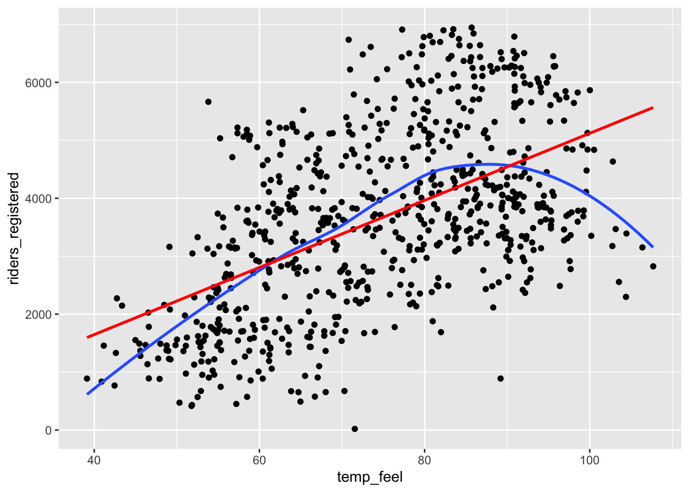
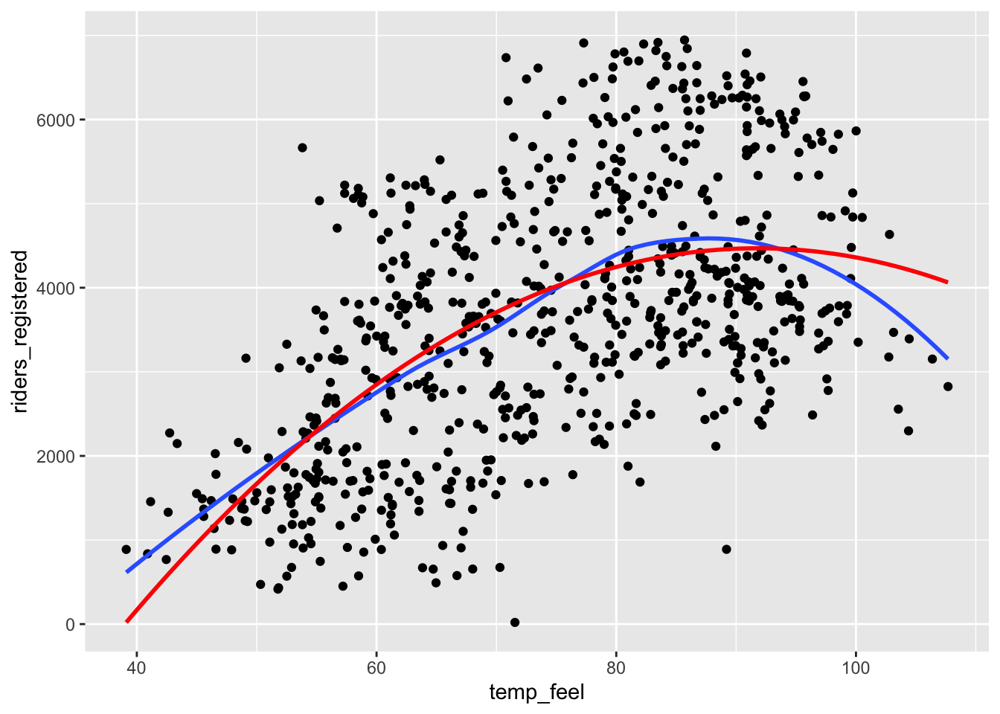
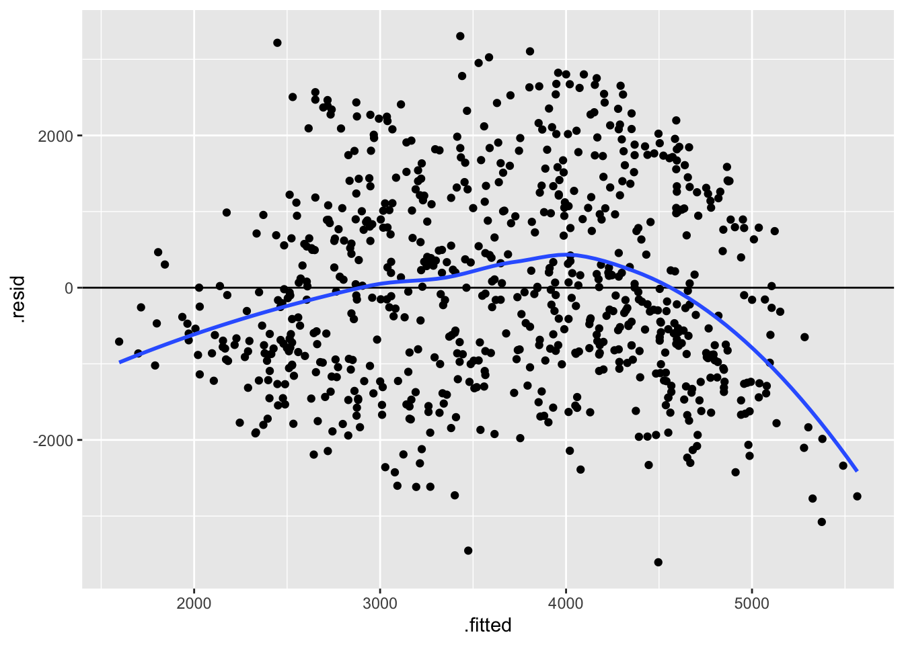
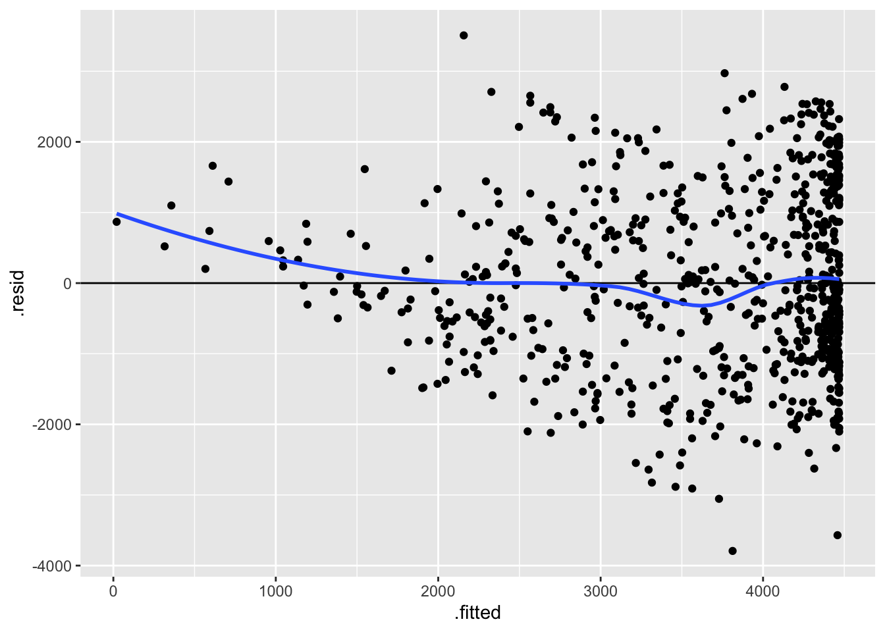
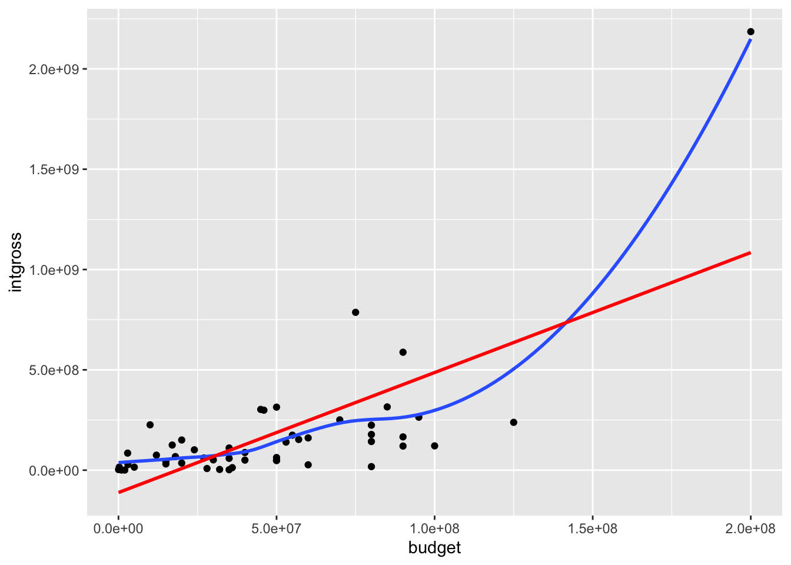
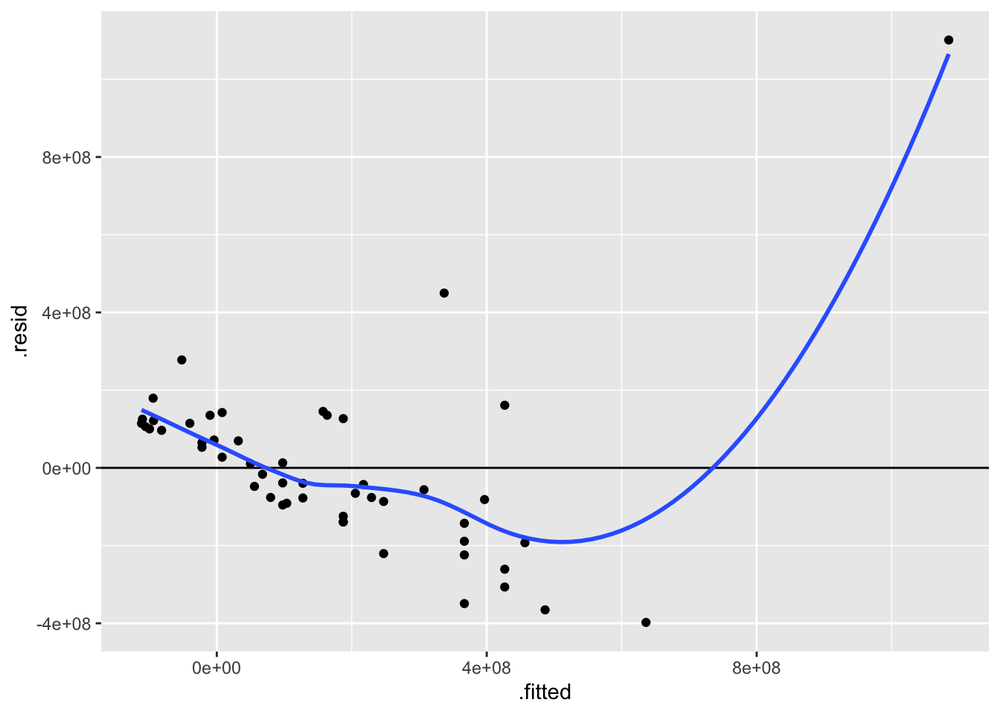
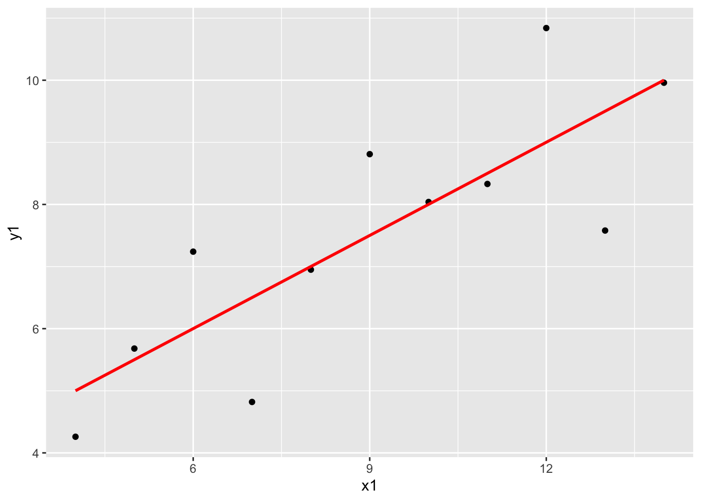
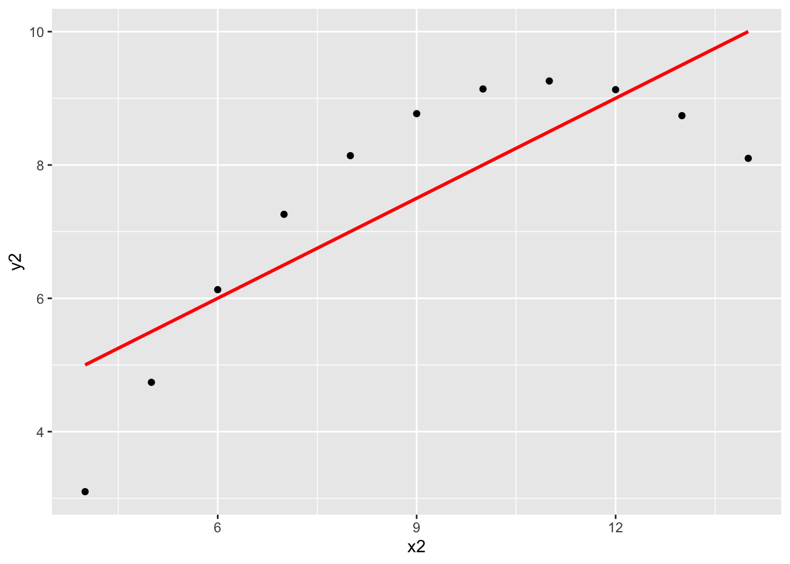
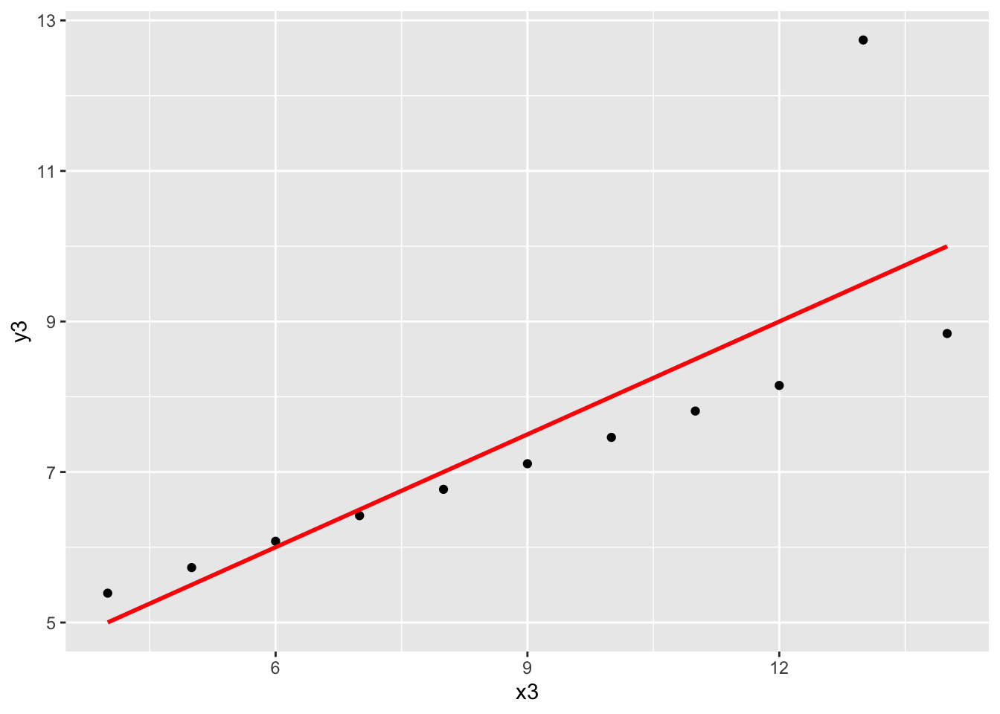
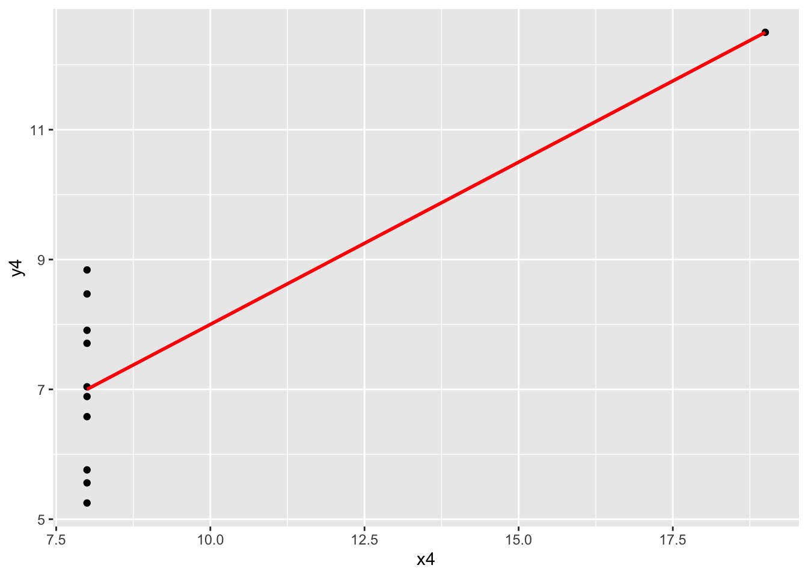

# Load packages and import data
library(readr)
library(ggplot2)
library(dplyr)
bikes <- read_csv("https://mac-stat.github.io/data/bikeshare.csv")Simple linear regression: model evaluation
Notes and in-class exercises
Notes
- You can download a template file to work with here.
- File organization: Save this file in the “Activities” subfolder of your “STAT155” folder.
Learning goals
By the end of this lesson, you should be able to:
- Use residual plots to evaluate the correctness of a model
- Explain the rationale for the R-squared metric of model strength
- Interpret the R-squared metric
- Think about ethical implications of modeling by examining the impacts of biased data, power dynamics, the role of categorization, and the role of emotion and lived experience
Readings and videos
Before class you should have read and/or watched:
- Reading: Sections 1.7, 3.7, and 3.8 in the STAT 155 Notes
- Videos:
Review
Guiding question: How good is a model?
When we evaluate the quality of a model, it helps to consider 3 questions:
- Is the model wrong?
- Is the model strong?
- Is the model fair?
Is the model wrong?
- A model is wrong if it is systematically inaccurate in describing reality.
- We can assess this with residual plots in which we plot:
- the predicted values (fitted values) from the model on the x axis.
- We get the predicted values by taking each case and plugging the predictor into the model to get a prediction.
- the residuals from the model on the y axis
- We get the residuals by computing for each case: observed y - predicted y
- the predicted values (fitted values) from the model on the x axis.
Example: Slide 6 from the Is the model wrong? video
Is the model strong?
- A strong model is able to explain a lot about why the outcome/response variable varies.
- We explored correlation last week.
- The closer the correlation is to -1 or 1 for linearly related variables, the stronger the trend.
- Correlation is unfortunately limited to looking at the linear relationship between 2 quantitative variables.
- The R-squared (\(R^2\)) metric can be used for linear regression models with a quantitative predictor, a categorical predictor, and a mix of multiple quantitative and/or categorical predictors.
- Ranges from 0 to 1.
- Values closer to 1 indicate a stronger model.
- \(R^2\) is interpreted as the proportion of variation in the outcome that is explained by the model.
Example: Slide 4 from the Is the model strong? video
Is the model fair?
- When we make models, we are able to use them by:
- Using the coefficients to gain some understanding about the world.
- Example: How much do movie earnings tend to increase as movie budget increases? (The slope coefficient from a model of earnings vs. budget can help us address this.)
- Make predictions for individual cases
- Example: Predict house price given physical characteristics of the house.
- Using the coefficients to gain some understanding about the world.
- When assessing fairness we need to think about:
- Are we generating explanations of the world that may harm others?
- Are we making predictions from our models that systematically harm certain groups?
- If the answers to any of the above 2 questions is “yes”, why is that happening? How can we think about the who, what, when, where, why, and how behind the data to dig deeper?
- Example: Lawsuit Alleging Racial Bias in Home Appraisals Is Settled
Exercises
We’ll start by revisiting the Capital Bikeshare data from a previous activity. This data contains information on daily ridership for a bike sharing service in Washington DC alongside weather and calendar information. Read in the data and load required packages:
Exercise 1: Is the model correct?
We previously explored modeling daily ridership among registered users as a function of temperature. Create a plot of this relationship with both a curved and linear trend line. Based on this plot, do you think a linear model is correct?
# Plot riders_registered vs temp_feel with both a curved and linear trend
___(___, aes(x = ___, y = ___)) +
geom___() +
geom___(se = FALSE) +
geom___(method = "lm", se = FALSE, color = "red")Exercise 2: Fixing the model
In this course, we have and will continue to build “linear” regression models. “Linear” means we have a linear combination of predictors. It does not mean that the models themselves must look linear! It’s possible to include “transformations” in our models in order to better match the trend. Below we create a squared version of temperature and visualize the predictions from 2 models: (1) with just temperature as a linear term and (2) with both temperature and squared temperature. (Don’t worry about the new syntax in geom_smooth().)
How does the quality (correctness) of the two models compare?
bikes <- bikes %>%
mutate(temp_feel_squared = temp_feel^2)
# Plot the model WITHOUT squared temperature
ggplot(bikes, aes(x = temp_feel, y = riders_registered)) +
geom_point() +
geom_smooth(se = FALSE) +
geom_smooth(method = "lm", se = FALSE, color = "red")
# Plot the model WITH squared temperature
ggplot(bikes, aes(x = temp_feel, y = riders_registered)) +
geom_point() +
geom_smooth(se = FALSE) +
geom_smooth(method = "lm", formula = y ~ x + I(x^2), se = FALSE, color = "red")Exercise 3: Residual plots
Plotting the residuals vs the predictions (also called “fitted values”) for each case can help us assess how wrong our model is. This will be a particularly important tool when evaluating models with multiple predictors. Construct the residual plots for our two temperature models. Do these suggest that bike_mod1 is wrong? What about bike_mod2? Explain.
Note: Information about the residuals (.resid) and predictions (.fitted) are stored within our model, thus we start our ggplot() with the model name as opposed to the raw dataset. We will rarely start ggplot() with a model instead of the data.
# Fit a linear model
bike_mod1 <- lm(riders_registered ~ temp_feel, data = bikes)
# Fit a quadratic model
bike_mod2 <- lm(riders_registered ~ temp_feel + temp_feel_squared, data = bikes)
# Check out the residual plot for bike_mod1 (the incorrect model)
ggplot(bike_mod1, aes(x = .fitted, y = .resid)) +
geom_point() +
geom_hline(yintercept = 0) +
geom_smooth(se = FALSE)
# Construct the residual plot for bike_mod2 (the good model)Exercise 4: Another example of an incorrect model
The Bechdel test is a test applied to films to assess the quality of women’s presence in the film. We’ll be looking at movies that have had the Bechdel test applied available in the fivethirtyeight R package.
We’ll be using the bechdel data. You can view the codebook by entering ?bechdel in the Console.
Let’s examine the relationship between international earnings (intgross) and movie budget (budget) for films made in 1997.
# Import the data
library(fivethirtyeight)
data(bechdel)
# Get only 1997 movies
movies_1997 <- bechdel %>%
filter(year == 1997)
# Construct the model
bechdel_model <- lm(intgross ~ budget, movies_1997)- Construct two plots:
# Scatterplot of earnings and budget with linear and curved trend lines
# Residual plot for bechdel_modelThese two plots confirm that our model is wrong. What is wrong and how might we fix it?
Identify which movie is causing the problem. Hint:
filter()according tobudget. Also, note that we could, but won’t, take that film out of the data set and re-build the model.
# Many numbers could go in the ___ to successfully identify the outlier
movies_1997 %>%
filter(budget > ___)Exercise 5: Is the model strong? Developing R-squared intuition
The R-squared metric is a way to quantify the strength of a model. It measures how much variation in the outcome/response variable can be explained by the model.
Where does R-squared come from? Well, it turns out that we can partition the variance of the observed response values into the variability that’s explained by the model (the variance of the predictions) and the variability that’s left unexplained by the model (the variance of the residuals):
\[\text{Var(observed) = Var(predicted) + Var(residuals)}\]
“Good” models have residuals that don’t deviate far from 0. So the smaller the variance in the residuals (thus larger the variance in the predictions), the stronger the model. Take a look at the picture below and write a few sentences addressing the following:
- The two rows of plots show a stronger and a weaker model. Just by looking at the blue trend line and the dispersion of the points about the line, which row corresponds to the stronger model? How can you tell? Which row would you expect to have a higher correlation?
- What is different about the variance of the residuals from the first to the second row?

Putting this together, the R-squared compares Var(predicted) to Var(response):
\[R^2 = \frac{\text{variance of predicted values}}{\text{variance of observed response values}} = 1 - \frac{\text{variance of residuals}}{\text{variance of observed response values}}\]
Exercise 6: Further exploring R-squared
In this exercise, we’ll look at data from a synthetic dataset called Anscombe’s quartet. Load the data in as follows, and look at the first few rows:
data(anscombe)
# Look at the first few rowsThe anscombe data is actually 4 datasets in one: x1 and y1 go together, and so forth. Examine the coefficient estimates (in the “Estimate” column of the “Coefficients:” part) and the “Multiple R-squared” value on the second to last line. What do you notice? How do these models compare?
anscombe_mod1 <- lm(y1 ~ x1, data = anscombe)
anscombe_mod2 <- lm(y2 ~ x2, data = anscombe)
anscombe_mod3 <- lm(y3 ~ x3, data = anscombe)
anscombe_mod4 <- lm(y4 ~ x4, data = anscombe)
summary(anscombe_mod1)
summary(anscombe_mod2)
summary(anscombe_mod3)
summary(anscombe_mod4)Now take a look at the following scatterplots of the 4 pairs of variables. What do you notice? What takeaway can we draw from this exercise?
ggplot(anscombe, aes(x = x1, y = y1)) +
geom_point() +
geom_smooth(method = "lm", color = "red", se = FALSE)
ggplot(anscombe, aes(x = x2, y = y2)) +
geom_point() +
geom_smooth(method = "lm", color = "red", se = FALSE)
ggplot(anscombe, aes(x = x3, y = y3)) +
geom_point() +
geom_smooth(method = "lm", color = "red", se = FALSE)
ggplot(anscombe, aes(x = x4, y = y4)) +
geom_point() +
geom_smooth(method = "lm", color = "red", se = FALSE)Exercise 7: Biased data, biased results: example 1
DATA ARE NOT NEUTRAL. Data can reflect personal biases, institutional biases, power dynamics, societal biases, the limits of our knowledge, and so on. In turn, biased data can lead to biased analyses. Consider an example.
Do a Google image search for “statistics professor.” What do you observe?
These search results are produced by a search algorithm / model. Explain why the data used by this model are not neutral.
What are the potential implications, personal or societal, of the search results produced from this biased data?
Exercise 8: Biased data, biased results: example 2
Consider the example of a large company that developed a model / algorithm to review the résumés of applicants for software developer & other tech positions. The model then gave each applicant a score indicating their hireability or potential for success at the company. You can think of this model as something like:
\[\text{potential for success } = \beta_0 + \beta_1 (\text{features from the résumé})\]
Skim this Reuter’s article about the company’s résumé model.
Explain why the data used by this model are not neutral.
What are the potential implications, personal or societal, of the results produced from this biased data?
Exercise 9: Rigid data collection systems
When working with categorical variables, we’ve seen that our units of observation fall into neat groups. Reality isn’t so discrete. For example, check out questions 6 and 9 on page 2 of the 2020 US Census. With your group, discuss the following:
What are a couple of issues you see with these questions?
What impact might this type of data collection have on a subsequent analysis of the census responses and the policies it might inform?
Can you think of a better way to write these questions while still preserving the privacy of respondents?
FOR A DEEPER DISCUSSION: Read Chapter 4 of Data Feminism on “What gets counted counts”.
Exercise 10: Presenting data: “Elevating emotion and embodiment”
Note: The following example highlights work done by W.E.B. Du Bois in the late 1800s / early 1900s. His work uses language common to that time period and addresses the topic of slavery.
The types of visualizations we’ve been learning in this course are standard practice, hence widely understood. Yet these standard visualizations can also suppress the lived experiences of people represented in the data, hence can miss the larger point. W.E.B. Du Bois (1868–1963), a “sociologist, socialist, historian, civil rights activist, Pan-Africanist, author, writer, and editor”1, was a pioneer in elevating emotion and embodiment in data visualization. For the Paris World Fair of 1900, Du Bois and his team of students from Atlanta University presented 60 data visualizations of the Black experience in America, less than 50 years after the abolishment of slavery. To this end, Du Bois noted that “I wanted to set down its aim and method in some outstanding way which would bring my work to notice by the thinking world.” That is, he wanted to increase the impact of his work by partnering technical visualizations with design that better connects to lived experiences. Check out:
An article by Allen Hillery (@AlDatavizguy).
A complete set of the data visualizations provided by Anthony Starks (@ajstarks).
Discuss your observations. In what ways do you think the W.E.B. Du Bois visualizations might have been more effective at sharing his work than, say, plainer bar charts?
FOR A DEEPER DISCUSSION AND MORE MODERN EXAMPLES: Read Chapter 3 of Data Feminism on the principle of elevating emotion and embodiment, i.e. the value of “multiple forms of knowledge, including the knowledge that comes from people as living, feeling bodies in the world.”
Reflection
What has stuck with you most in our exploration of model evaluation? Why?
Response: Put your response here.
Render your work
- Click the “Render” button in the menu bar for this pane (blue arrow pointing right). This will create an HTML file containing all of the directions, code, and responses from this activity. A preview of the HTML will appear in the browser.
- Scroll through and inspect the document to check that your work translated to the HTML format correctly.
- Close the browser tab.
- Go to the “Background Jobs” pane in RStudio and click the Stop button to end the rendering process.
- Navigate to your “Activities” subfolder within your “STAT155” folder and locate the HTML file. You can open it again in your browser to double check.
Solutions
Exercise 1: Is the model correct?
The blue curved trend line shows a clear downward trend around 85 degrees, which contextually makes plenty of sense—extremely hot days would naturally see less riders. Overall the combination of the upward trend and downward trend makes for a curved relationship that is not captured well by a straight line of best fit.
ggplot(bikes, aes(x = temp_feel, y = riders_registered)) +
geom_point() +
geom_smooth(se = FALSE) +
geom_smooth(method = "lm", se = FALSE, color = "red")`geom_smooth()` using method = 'loess' and formula = 'y ~ x'
`geom_smooth()` using formula = 'y ~ x'
Exercise 2: Fixing the model
The second plot (showing the model with squared temperature) follows the natural curve in the trend better.
bikes <- bikes %>%
mutate(temp_feel_squared = temp_feel^2)
# Plot the model WITHOUT squared temperature
ggplot(bikes, aes(x = temp_feel, y = riders_registered)) +
geom_point() +
geom_smooth(se = FALSE) +
geom_smooth(method = "lm", se = FALSE, color = "red")`geom_smooth()` using method = 'loess' and formula = 'y ~ x'
`geom_smooth()` using formula = 'y ~ x'# Plot the model WITH squared temperature
ggplot(bikes, aes(x = temp_feel, y = riders_registered)) +
geom_point() +
geom_smooth(se = FALSE) +
geom_smooth(method = "lm", formula = y ~ x + I(x^2), se = FALSE, color = "red")`geom_smooth()` using method = 'loess' and formula = 'y ~ x'
Exercise 3: Residual plots
The first residual plot (from the model with just a straight line trend) shows a lingering trend in the residuals—the blue curve traces the trend in the residuals, and it does not lie flat on the y = 0 line.
On the other hand, the second residual plot (from the model which uses a squared term to allow for curvature) shows very little trend in the residuals—the blue curve is almost flat on the y = 0 line.
# Fit a linear model
bike_mod1 <- lm(riders_registered ~ temp_feel, data = bikes)
# Fit a quadratic model
bike_mod2 <- lm(riders_registered ~ temp_feel + temp_feel_squared, data = bikes)
# Check out the residual plot for bike_mod1 (the incorrect model)
ggplot(bike_mod1, aes(x = .fitted, y = .resid)) +
geom_point() +
geom_hline(yintercept = 0) +
geom_smooth(se = FALSE)`geom_smooth()` using method = 'loess' and formula = 'y ~ x'
# Construct the residual plot for bike_mod2 (the good model)
ggplot(bike_mod2, aes(x = .fitted, y = .resid)) +
geom_point() +
geom_hline(yintercept = 0) +
geom_smooth(se = FALSE)`geom_smooth()` using method = 'loess' and formula = 'y ~ x'
Exercise 4: Another example of an incorrect model
# Scatterplot of earnings and budget with linear and curved trend lines
ggplot(movies_1997, aes(x = budget, y = intgross)) +
geom_point() +
geom_smooth(se = FALSE) +
geom_smooth(method = "lm", se = FALSE, color = "red")`geom_smooth()` using method = 'loess' and formula = 'y ~ x'
`geom_smooth()` using formula = 'y ~ x'
# Residual plot for bechdel_model
ggplot(bechdel_model, aes(x = .fitted, y = .resid)) +
geom_point() +
geom_hline(yintercept = 0) +
geom_smooth(se = FALSE)`geom_smooth()` using method = 'loess' and formula = 'y ~ x'
From the scatterplot, we can see that there is one movie that is a massive outlier in both budget and earnings, and this outlier is pulling up the trend line that makes the model for “regular” movies that have budgets and earnings in “normal” ranges.
The outlier movie is Titanic:
# One of many ways to filter to find the outlier movie!
movies_1997 %>%
filter(intgross > 2000000000)# A tibble: 1 × 15
year imdb title test clean_test binary budget domgross intgross code
<int> <chr> <chr> <chr> <ord> <chr> <int> <dbl> <dbl> <chr>
1 1997 tt0120338 Titanic ok ok PASS 2e8 6.59e8 2.19e9 1997…
# ℹ 5 more variables: budget_2013 <int>, domgross_2013 <dbl>,
# intgross_2013 <dbl>, period_code <int>, decade_code <int>Exercise 5: Is the model strong? Developing R-squared intuition
The R-squared metric is a way to quantify the strength of a model. It measures how much variation in the outcome/response variable can be explained by the model.
Where does R-squared come from? Well, it turns out that we can partition the variance of the observed response values into the variability that’s explained by the model (the variance of the predictions) and the variability that’s left unexplained by the model (the variance of the residuals):
\[\text{Var(observed) = Var(predicted) + Var(residuals)}\]
“Good” models have residuals that don’t deviate far from 0. So the smaller the variance in the residuals (thus larger the variance in the predictions), the stronger the model. Take a look at the picture below and write a few sentences addressing the following:
- The first row corresponds to the weaker model. We can tell because the points are much more dispersed from the trend line than in the second row. Recall that the correlation metric measures how closely clustered points are about a straight line of best fit, so we would expect the correlation to be lower for the first row than the second row.
- The variance of the residuals is much lower for the second row—the residuals are all quite small. This indicates a stronger model.
Exercise 6: Further exploring R-squared
In this exercise, we’ll look at data from a synthetic dataset called Anscombe’s quartet. Load the data in as follows, and look at the first few rows:
data(anscombe)
# Look at the first few rows
head(anscombe) x1 x2 x3 x4 y1 y2 y3 y4
1 10 10 10 8 8.04 9.14 7.46 6.58
2 8 8 8 8 6.95 8.14 6.77 5.76
3 13 13 13 8 7.58 8.74 12.74 7.71
4 9 9 9 8 8.81 8.77 7.11 8.84
5 11 11 11 8 8.33 9.26 7.81 8.47
6 14 14 14 8 9.96 8.10 8.84 7.04All of these models have close to the same intercept, slope, and R-squared!
anscombe_mod1 <- lm(y1 ~ x1, data = anscombe)
anscombe_mod2 <- lm(y2 ~ x2, data = anscombe)
anscombe_mod3 <- lm(y3 ~ x3, data = anscombe)
anscombe_mod4 <- lm(y4 ~ x4, data = anscombe)
summary(anscombe_mod1)
Call:
lm(formula = y1 ~ x1, data = anscombe)
Residuals:
Min 1Q Median 3Q Max
-1.92127 -0.45577 -0.04136 0.70941 1.83882
Coefficients:
Estimate Std. Error t value Pr(>|t|)
(Intercept) 3.0001 1.1247 2.667 0.02573 *
x1 0.5001 0.1179 4.241 0.00217 **
---
Signif. codes: 0 '***' 0.001 '**' 0.01 '*' 0.05 '.' 0.1 ' ' 1
Residual standard error: 1.237 on 9 degrees of freedom
Multiple R-squared: 0.6665, Adjusted R-squared: 0.6295
F-statistic: 17.99 on 1 and 9 DF, p-value: 0.00217summary(anscombe_mod2)
Call:
lm(formula = y2 ~ x2, data = anscombe)
Residuals:
Min 1Q Median 3Q Max
-1.9009 -0.7609 0.1291 0.9491 1.2691
Coefficients:
Estimate Std. Error t value Pr(>|t|)
(Intercept) 3.001 1.125 2.667 0.02576 *
x2 0.500 0.118 4.239 0.00218 **
---
Signif. codes: 0 '***' 0.001 '**' 0.01 '*' 0.05 '.' 0.1 ' ' 1
Residual standard error: 1.237 on 9 degrees of freedom
Multiple R-squared: 0.6662, Adjusted R-squared: 0.6292
F-statistic: 17.97 on 1 and 9 DF, p-value: 0.002179summary(anscombe_mod3)
Call:
lm(formula = y3 ~ x3, data = anscombe)
Residuals:
Min 1Q Median 3Q Max
-1.1586 -0.6146 -0.2303 0.1540 3.2411
Coefficients:
Estimate Std. Error t value Pr(>|t|)
(Intercept) 3.0025 1.1245 2.670 0.02562 *
x3 0.4997 0.1179 4.239 0.00218 **
---
Signif. codes: 0 '***' 0.001 '**' 0.01 '*' 0.05 '.' 0.1 ' ' 1
Residual standard error: 1.236 on 9 degrees of freedom
Multiple R-squared: 0.6663, Adjusted R-squared: 0.6292
F-statistic: 17.97 on 1 and 9 DF, p-value: 0.002176summary(anscombe_mod4)
Call:
lm(formula = y4 ~ x4, data = anscombe)
Residuals:
Min 1Q Median 3Q Max
-1.751 -0.831 0.000 0.809 1.839
Coefficients:
Estimate Std. Error t value Pr(>|t|)
(Intercept) 3.0017 1.1239 2.671 0.02559 *
x4 0.4999 0.1178 4.243 0.00216 **
---
Signif. codes: 0 '***' 0.001 '**' 0.01 '*' 0.05 '.' 0.1 ' ' 1
Residual standard error: 1.236 on 9 degrees of freedom
Multiple R-squared: 0.6667, Adjusted R-squared: 0.6297
F-statistic: 18 on 1 and 9 DF, p-value: 0.002165But when we look at the scatterplots, they all look substantially different, and we would want to approach our modeling differently for each one:
x1andy1: A linear model seems appropriate for this data.x2andy2: The scatterplot is clearly curved—a “linear” regression model with squared terms, for example, would be more appropriate for this data. (We’ll talk more about ways to handle nonlinear relationships soon!)x3andy3: There is a very clear outlier at aboutx3 = 13that we would want to dig into to better understand the context. After that investigation, we might consider removing this outlier and refitting the model.x4andy4: There is clearly something strange going on with most of the cases having anx4value of exactly 8. We would not want to jump straight into modeling. Instead, we should dig deeper to find out more about this data.
ggplot(anscombe, aes(x = x1, y = y1)) +
geom_point() +
geom_smooth(method = "lm", color = "red", se = FALSE)`geom_smooth()` using formula = 'y ~ x'
ggplot(anscombe, aes(x = x2, y = y2)) +
geom_point() +
geom_smooth(method = "lm", color = "red", se = FALSE)`geom_smooth()` using formula = 'y ~ x'
ggplot(anscombe, aes(x = x3, y = y3)) +
geom_point() +
geom_smooth(method = "lm", color = "red", se = FALSE)`geom_smooth()` using formula = 'y ~ x'
ggplot(anscombe, aes(x = x4, y = y4)) +
geom_point() +
geom_smooth(method = "lm", color = "red", se = FALSE)`geom_smooth()` using formula = 'y ~ x'
Exercises 7 - 10
No solutions for these exercises. These require longer discussions, not discrete answers.
Footnotes
https://en.wikipedia.org/wiki/W._E._B._Du_Bois↩︎